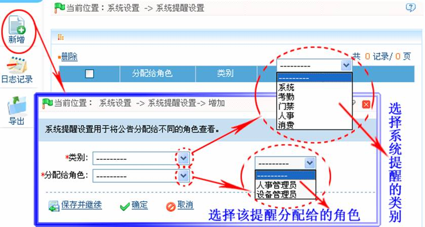

9.3 系统提醒设置
设置系统提醒的通知人员和提醒时间，系统提醒包括有转正、生日的提醒。设置好系统提醒后，被通知人员在系统提醒时间内打开系统后右下角会弹出提醒对话框，提醒相关操作员相关事宜以做相应处理。
用于将系统提醒分配给不同的角色查看。如“人事”类的系统提醒生效，如员工生日、转正的提前提醒天数。
新增系统提醒设置：
1、单击【系统设置】 【系统提醒设置】
【系统提醒设置】 【新增】，进入新增系统提醒设置页面：
【新增】，进入新增系统提醒设置页面：

类别：选择（公告）类别（系统类、考勤类、门禁类、人事类）。公告类别的设置，请参见9.4.1 公告类别。
分配给角色：选择将权限分配给哪些角色；即为指定类别的公告，分配具有查看权限的角色。角色的设置，请参见9.1.1 角色管理。
2、设置完成后，单击【确定】按钮保存即可。